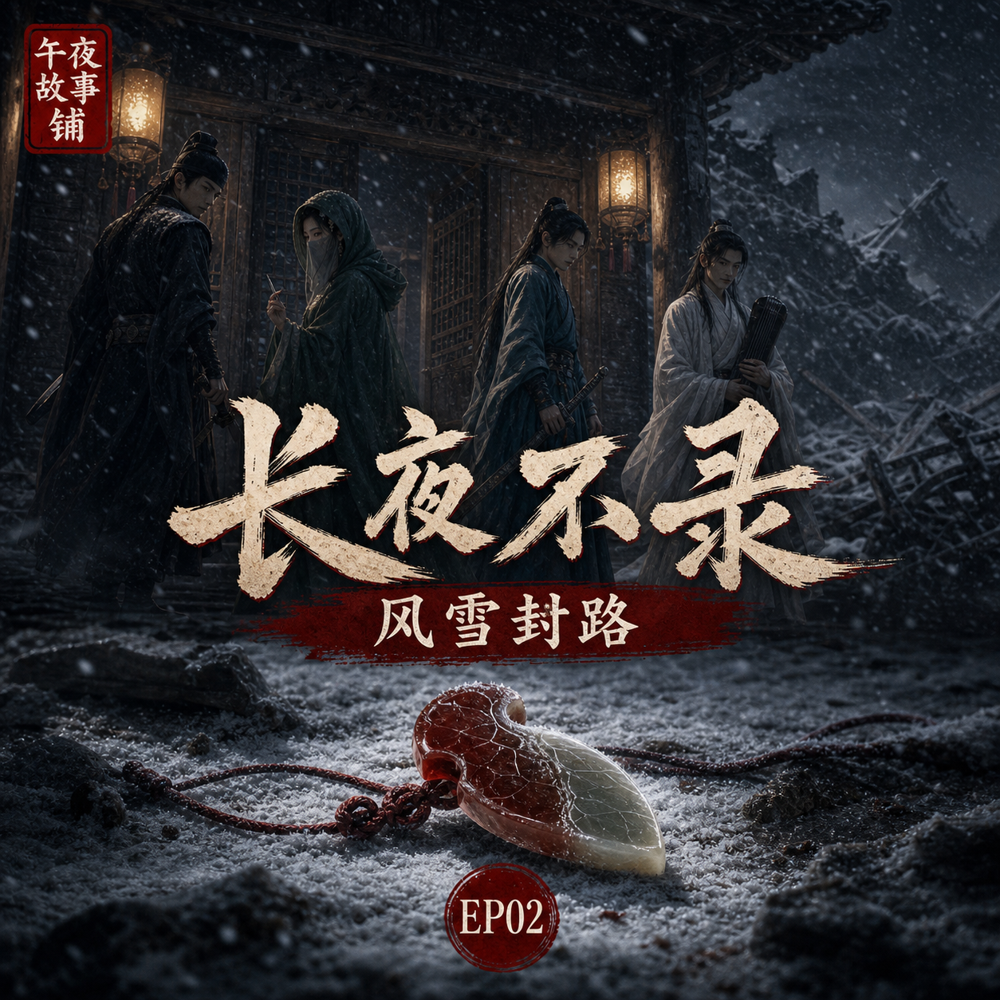

长夜不录：风雪封路
半枚红叶玉佩入门后，驿站里每个人都像被风雪困住了旧事

简介
半枚红叶玉佩随箭入门，洗剑楼少主柳照寒神色骤变，却矢口否认玉佩与自己有关。风雪封住官道，断云驿里的客人无法离开。沈砚开始观察每个人的反应：掌柜藏话，医女藏针，白衣客藏剑，而柳照寒藏着一个比死亡更沉的秘密。
标签
- 古风
- 刑侦
- 武侠
- 密室前夜
- 江湖旧怨
半枚红叶玉佩入门后，驿站里每个人都像被风雪困住了旧事

半枚红叶玉佩随箭入门，洗剑楼少主柳照寒神色骤变，却矢口否认玉佩与自己有关。风雪封住官道，断云驿里的客人无法离开。沈砚开始观察每个人的反应：掌柜藏话，医女藏针，白衣客藏剑，而柳照寒藏着一个比死亡更沉的秘密。